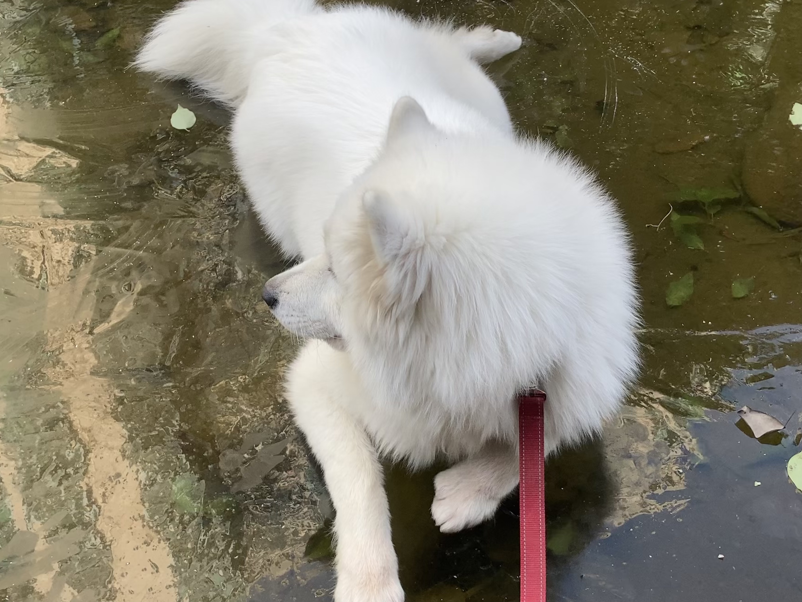

育狗指南¶
霏霏马上要1岁4个月了，在这个有一点莫名其妙的夜晚，我打算记录一些关于养狗的琐碎事务（大概会按照淘宝购物时间线来梳理。
衣
没有买过那种小马甲或者鞋子之类的东西，感觉并不是很实用，仅有的两条绳子，是hurtta的一条P绳，和pawimage的项圈和牵引绳（重点：防爆冲型），尤记得当时活动，送了一只项圈。
狗笼罩子，很实用，特别是笼子放到阳台之后遇到雨天，事实证明它讨厌湿湿的感觉。
食
狗粮主要吃渴望，皇家，now，综合感觉：渴望 > now >= 皇家的样子。不过现在只有一半时间吃狗粮了。有次看忠犬八公，那个人讲：hachi很好养活的，人类吃的他都可以吃，所以后面一般时候都会和我一起吃（我剩的）：包子，粥，蔬菜，肉等等，只要避开油盐辛辣即可，看上去感觉要比所有狗粮香的样子。
淘宝上买过三文鱼边角料，有时煎着吃，有时忙就冰箱里拿出来喂生的，应该是目前为止的最爱。
猪筒骨和鸡骨架，比较懒，于是经常吃生的。
蔬菜偶尔会做西兰花胡萝卜，简单煮一煮，一般认为胡萝卜需要稍微过一下油。
童年时期，我买过认为不错的零食：
风干的骨头棒，羊扇骨
羊奶粉
鸡鸭肉干
酸奶，冷冻后的
住
小时候住狗笼，在短暂的获得自由然后拆家屡禁不止的情况下，后面人不在家的时候，就只配住笼子了，再长大点就去阳台放飞自我了，因为掉毛很严重，拆家也略严重，阳台也没有封，相对容易保持整洁。
行
城市遛狗是个难题，尤其是上海这样的地方，等到什么时候可以永久WFH（一个美梦），真想带着它去农村生活，人和狗都无拘无束，总之就是出门牵绳，当然在那种夜深人静，或者凌晨四点，有一些游泳池，封闭的草坪可以放开跑一跑。
其他
驱虫：一直是福来恩外驱滴剂和犬心保那个牛肉块一样的内驱，也没有遇到过什么风波，不过半岁后频率就很低了，每三个月想起来了吃一次的样子。
疫苗：抱回家的时候50几天只打过第一针，后面的两针和狂犬是去宠物店打的，那时候狗还很小，不能出门，就没有买绳子（纠结症），都是抱怀里去打针，现在的体重就。。然后今年换去防疫站打疫苗，顺便一提，犬证需要官方的检疫证明。
护理：拾便袋子必备，梳子推荐船记的不锈钢排梳（也有更好更贵的），针梳就算了，梳完毛还得清理梳子。。狗小时候的时候各种清洁剂，湿巾，尿垫也很需要。长大后就只去外面拉了，狗厕所用过最好的是smartpaws家的。还有指甲刀大狗千万不要买，根本按不住，还是需要去宠物店。
玩具：任何玩具，狗更喜欢和主人一起玩，否则再好玩的玩具就只有三分钟热情，买过的比较值得一提的就是各种球，kong的不倒翁，飞盘这种。
还有别的，就以后想到再补充。打不动字了，养狗一旦成自然，就像多了一个需要照顾的家人，大概是空调太凉睡得太爽，一回头发现已经四脚朝天了。
放一张去年冬天，河面溜冰的照片。
